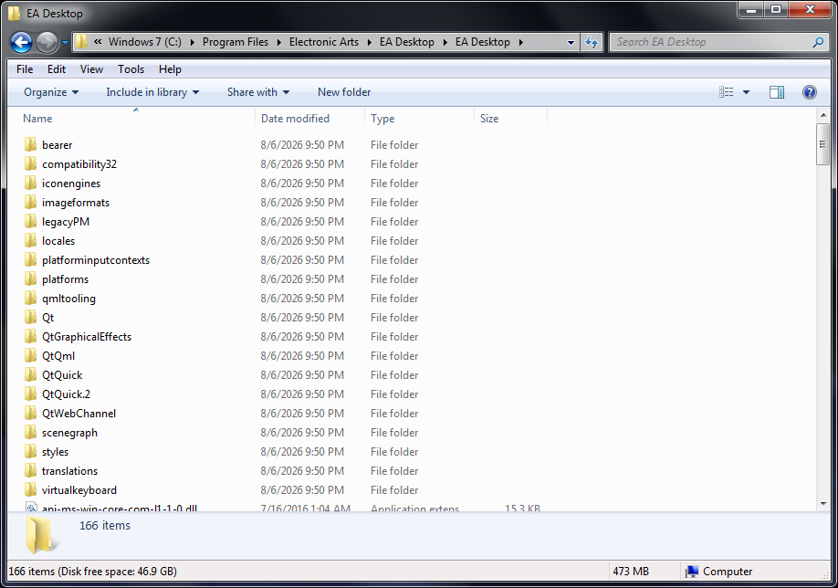

Patching EA app on Windows 7
Continuing to use EA app after EA's discontinuation and breakageThis solution is not permanent as the app will force you to install the latest update every other few weeks. You will need to repatch the program and reapply the registry every time if there is a update!
Step 1: Installing EA app
As the name suggests, the first step is to install EA app from EA's site.The installer does not work by default as it will always error with INST-21-25006, so you need to copy your existing install directory from another Windows 10/11 system, dualboot partition, or a virtual machine.
If your EA desktop app was updated in the past, and has both the version and mklink folder, you need to delete the EA Desktop mdlink, move the "EA Desktop" to prior root and delete version folder. It should look like this:

Step 2: Acquiring DLLs files
By default, the EA app requires the following DLLs files that are missing:api-ms-win-downlevel-kernel32-l2-1-0.dllapi-ms-win-eventing-provider-l1-1-0.dllapi-ms-win-core-com-l1-1-0.dll (This is not needed, but recommended to avoid having the shutdown to be stuck)You can find these missing files from your system or by downloading this zip file and extracting it to the EA Desktop folder.
Step 3: Patching files
This step may seem hard at first, but its really easy to do. Although the executables require both SetProcessMitigationPolicy and GetProcessMitigationPolicy API, they're not really used at all.The following executables files needs to be patched:
EALauncher.exeEALaunchHelper.exeEADesktop.exeEACefSubProcess.exeEABackgroundService.exeIf you are playing EA games through Steam, you will need patch these executables as well.
EASteamProxy.exeLink2EA.exeFor this step, open the executable file in CFF Explorer, navigate to the Import Directory -> KERNEL32.dll in the screenshot below and then change both SetProcessMitigationPolicy and GetProcessMitigationPolicy to a different API.
(Ex. SetProcessMitigationPolicy -> GetProcAddress and GetProcessMitigationPolicy -> GetModuleFileNameA)

Step 4: Applying registry files
Download this zip file, extract it, and apply the registries. After that, reboot your computer in order for the EA Background service to take effect.After rebooting, run EADeskop.exe from the install directory. If the login prompt appears correctly, you did everything correctly.
And that's it! Enjoy!